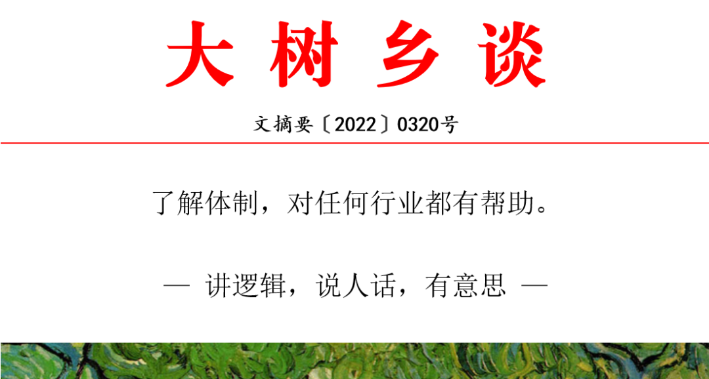

分享一个提升认知的方法

这周小镇连续发了两篇比较重视认知的文章，一篇是谈房地产和买房的《2022年中国房地产政策、房价及个人选择》，一篇则是2021年6月曾经付费分享的《人生前35年的个人发展方法论》。 有很多读者分享了体会，很多涉及个人隐私就不展示了。现在越来越卷，成功的门槛和要求也越来越高，以前有胆量、有信息就可以，现在不仅增加了学历、努力、人情世故还要强调一个有些摸不着头脑的认知。 如何提高认知？如何在时间极为有限、竞争越来越激烈的时代，提高时间、精力、资金的利用效率，就成为必须好好思考的问题。 关于认知提升，小镇后面会分享一个比较笨的方法，今天先推荐一个相对简单一点的方法，也是很多在职的人已经面临的问题：如果在职读硕士，学什么好呢？
首先要明确，倘若是自己工作要求必须有针对性的专业，或者计划脱产去读，这是另外的事。倘若对学什么并不在意，就是想获得更高的学历、认识更多朋友、学习更多东西又或者想要重温校园生活等等，那么小镇推荐的这个非常适合几乎所有行业。 那就是公共管理硕士（MPA），相信很多人对于类似的工商管理硕士（MBA）更加熟悉，而且往往听闻在体制外工作考MBA更好，MPA是公务员才去学的东西，等等。 小镇有不同想法，供大家参考。 先说共同点：两种硕士，考试题型是一样的，都是参加MPA和MBA联考，就两门：“199管理类综合能力联考”与“204英语二”两科，总分300分。
参加全国12月的统考，都是拿双证。 再说不一样的地方，小镇认为MPA更有优势的地方： 第一：学费便宜。
学习时间相同，MPA的学费往往比MBA便宜很多很多，大学越好差别越大，比如清华大学的MPA现在学费总计9.9万，而MBA最低也20万了，更高的还有40万、70万等等。 第二：少了很多功利，更有同学情谊。
整体来看，MPA确实体制内居多，而MBA体制外尤其企业界居多，这两种群体差别很大。一个典型的差别在于体制内关系更加稳定，同事很多是一辈子几十年的交情，这样稳固的关系就导致与人为善成为默认的事情。
而体制外尤其企业呢？人员变动频繁得多，关系的不稳定也就导致人与人很难形成比较长期的私人关系，反正就一两年最多几年的交情，这点交情跟利益和机会比起来，更容易被舍弃。 比如小镇刚到北京的处长就曾说：我跟你们在一起的时间，远远比我跟老婆孩子待的时间多。大家一起每天加班加点，经历过很多的磨合和工作，也就形成了互相信赖的关系。而大体上每一个公务员部门都有类似的情况，所以就形成了整体氛围。 因此以体制内尤其公务员为主体的MPA就更加纯粹了，能给在职工作的人与当年读书比较相似的感觉。
第三：填补对政府和体制的认知。 都说中国干什么都离不开政府，尤其很多行业比如互联网、房地产、内容娱乐等等，监管越来越强，很多行业的人之前特别迷信资本。比如小镇就曾听某独角兽公司的创始人说：他相信市场的力量，认为政府相对市场终归是第二位的。 当然他现在再也不说这话了，反而把他公司的政府关系工作不断加强。 这是很现实的事情。但在中国非常缺少了解政府和体制的渠道，以至于一些无良的人或者自媒体，发表一些特别有迷惑性、煽动性的文，获得了巨大的流量，然而相信他们说的那套的人，只会跟真正的政府和体制走得越来越远。
大多数人一生基本没可能成为公务员，也不可能为了解体制花上几年时间。然而体制又是一个颇有些微妙且复杂的结构，复杂度甚至超过体制外。那么在接受硕士学历教育的同时，通过比较系统的学习，尤其与公务员同学多交流，几年下来，学位有了、认知也有了，个人也实现了体制外+对体制的跨界能力。 这是学MBA完全实现不了的。毕竟无论MPA还是MBA真要说学习授课内容，网上有的是公开的课程，自己就能学习，关键是课堂之外那些认知、接触。
第四：更宏大的视野
相比MBA的教育集中于经济，MPA更加宏大，讲的是如何从政府的高度，对整个社会方方面面甚至国际国内进行整体思考，可以明显提高个人的认知全面性和高度。对于在企业工作的朋友，有助于补上相对短缺的一环。
在企业工作的实践，加上对政府逻辑的认知，这就是跨界。 第五：更有效的人脉
很多人迷信MBA，觉得可以认识很多人，大家可以一起创业，更甚至有些年轻漂亮的女性想通过读书找到金龟婿。这确实有成功的例子，但是绝大多数纯粹幻想，就算名校的MBA甚至EMBA有几个合作成功的？ 商界非常现实，自己有多大实力才有多大的被关注度，才能有合作，现在都很精明，日子又不好做，谁愿意平白无故当救苦救难的呢？话不说太直白了，大家可以体会。 更加关键的是，想想小镇前面说的体制外变化快、关系不稳定带来的心态影响。
“职场没有朋友”这句话小镇其实一直不太理解，因为体制内尤其公务员确实有很多人成为了好朋友，有太多因为工作关系，背后的家庭也是几十年的交情，这怎么成不了朋友呢？ 但是如果加几句话，比如强调体制外尤其公司，那这句话就有些道理了，朋友也会有，但确实更难。 而MPA就不一样了，本身读MPA的往往以年轻人居多，本来就没啥职权，大家彼此更加平等，就算有年龄比较大、职级比较高的，但公务员特别讲适应环境、低调内敛，到了学校就要有学生的样子，这是完全不同的。
而且有一个非常关键的点，需要提醒一下：哪里是最容易平等结识各部门公务员的呢？现在是年轻的同学，5年、10年、15年甚至20年后呢？ 最后，就是读哪里了？ 有高追求的，建议无论在全国哪里，都尽量争取读清华大学这样的名校，有学校把关挑选，而且管理非常严格，更容易有同学情谊。但是难点在于，确实难考，而且对学业要求很高，比如清华缺课真的会挂科、不符合要求真的就肄业了、毕业论文查重要求低于3%也不是说笑的。 如果要求没那么高，工作繁忙，建议就考自己所在城市的最好的大学，或者省会城市最好的几所大学；如果是北京、上海这样高校云集的城市，211以上就好。
这一篇也是某位读者昨天留言提问的，感觉挺值得分享下。如果大家还有疑问，可以继续留言。也欢迎大家分享自己的想法。
其他文章推荐
■ 如何理解中美罗马会晤、国务院金融委会议
如果喜欢，还请点赞、“在看”和关注吧 欢迎分享，让更多人发现“大树乡谈”